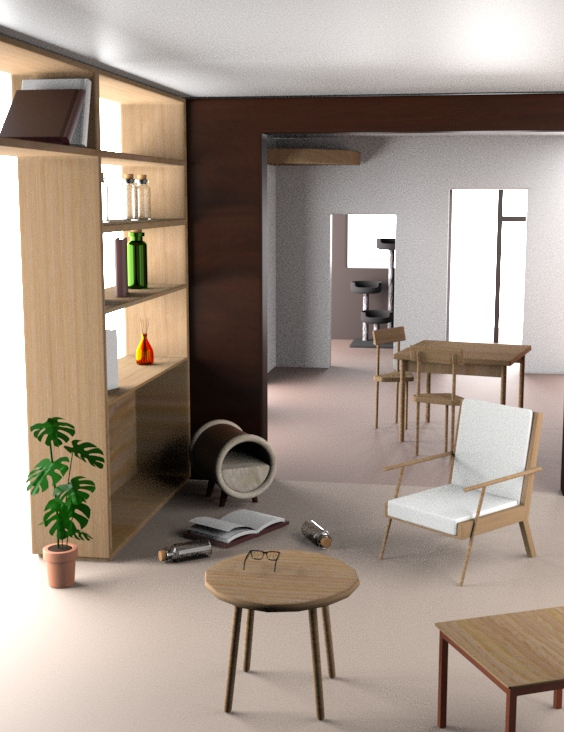

exploration
Currently, I have narrowed down my concentration to graphic and UX design but I can always change my mind and I don’t want to stop seeking new possibilities. This is one of the reasons why I enjoy studying Integrated Digital Media in Tandon. The program makes it easy for students to experience and mix up different areas of digital media. This page is dedicated to works that I created while trying to explore different sectors of digital media. These works are not necessarily related to what I specialize in but I had lots of fun creating them. I hope you enjoy ;)

3D modeling
Processing3"square_universe"